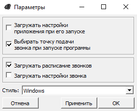

Окно настроек приложения

Флажок "Загружать настройки приложения при его запуске" отвечает за автозагрузку сохранённых настроек в файле Settings.ini.
Флажок "Выбирать точку подачи звонка при запуске программы" запускает систему подачи звонков при запуске программы. ВНИМАНИЕ: для работы этой опции необходимо, чтобы соблюдались 2 условия:
Флажок "Загружать расписание звонков" отвечает за загрузку расписания, сохранённого в Settings.ini;
Флажок "Загружать настройки звонка" овечает за загрузку выбранного пользователем аудиофайла, а так же параметров воспроизведения аудиофайла звонка из Settings.ini.
В выпадающем списке "Тема" можно изменить тему приложения.